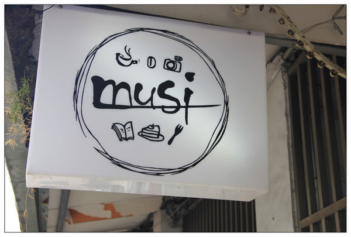
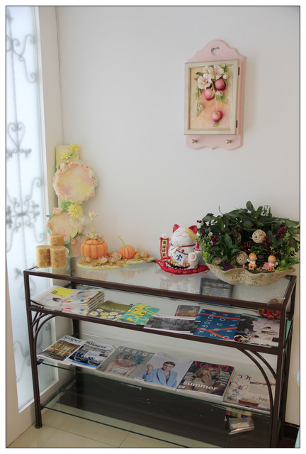
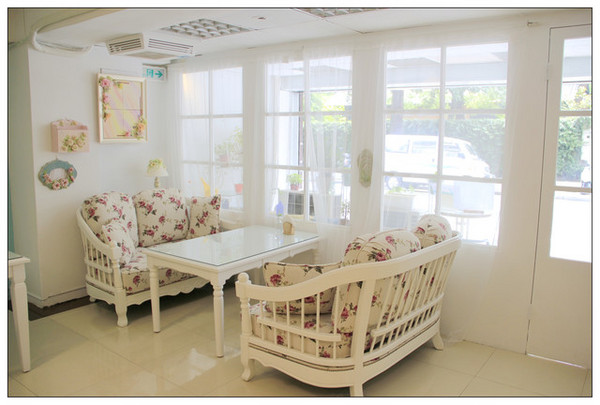
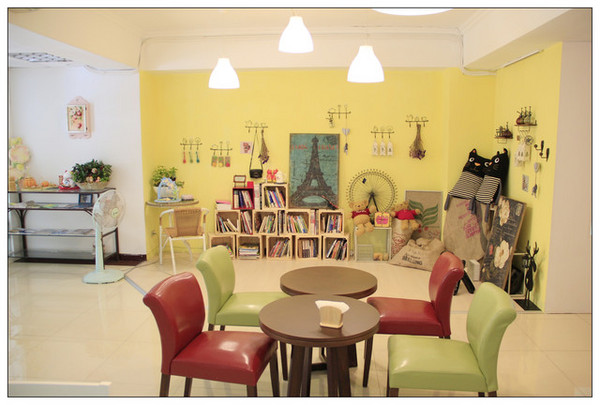
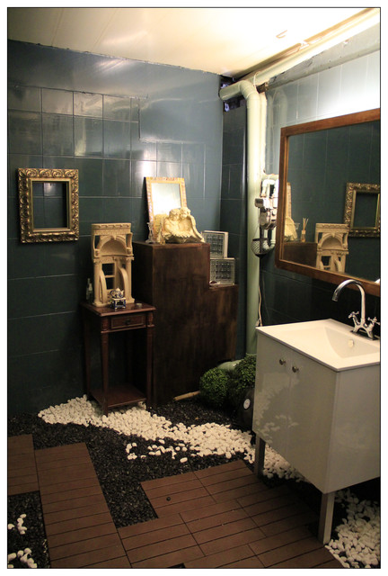
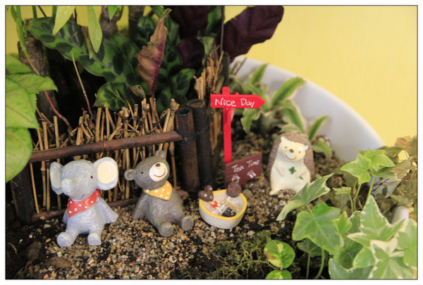

善導寺捷運站 - 鄉村風的早午餐，拍照好地方
April 26 Tues 2016 13:00
MUSI位於捷運善導寺站附近的~~從捷運站走來大約七八分鐘~
一整面純白的牆面中~就屬那梯婚尼藍的大門最明顯啦!!!
這裡一整排都是民房~有點不好找~~記得抬頭找這個小巧可愛的招牌就對啦!
開頭小菲就有提到~他們家營業的項目真是有夠多元的~~~除了早午餐和下午茶之外
也有提供
手工餅乾、麵包花的教學課程~~新娘秘書工作室租借、攝影或商業包場啥都有
果然是很多面向的經營無誤阿!!
推開大門首先看到的是小巧可愛的玄關區~這裡有提供一些書報雜誌及藝文資訊可自行取閱進
門的右手邊就是小菲最愛的鄉村風沙發區啦~~這沙發好夢幻也好好坐喔~
再往裡走一點~~這一區又變得很南法風情
就連WC也會讓人眼睛一亮~~木頭地板混搭小石子XD
手繪版的MENU好古錐~~
他們家的餐點就是輕食~歐姆蛋早午餐、三明治、沙拉、鬆餅、甜點及一些解饞小點心
飲料部分以茶類為主~不提供咖啡~~說起來選擇不算太多哩!!!
起司香腸歐姆蛋NT260
他們家的歐姆蛋系列都有附生菜、水果、薯條或雞塊、柳橙汁、咖啡、紅茶、奶茶三選一
看起來真的很豐盛吧~擺盤好優美喔!
焦糖舒芙蕾 NT140
印象中說道舒芙蕾應該是一小盅~熱呼呼~看起來很蓬鬆~很經典的一道法式甜點
歐洲水果茶NT180
他們家用的是德國B&G農莊有機花草茶~
這款水果茶裡有洛神花、蘋果、覆盆子、草莓、接骨木果、黑莓～是不含咖啡因的喔!
玫瑰蜜桃煎茶NT180
這款茶品就有含咖啡因~成分有日式煎茶、玫瑰花、矢車菊、向日葵
蜂蜜鬆餅NT110
跟茶品比起來鬆餅的價格意外的親民~~份量也是紮實的四大塊
在烤鬆餅前~老闆娘都會先問客人是喜歡吃酥脆一點或是鬆軟一點
以上是小小的推薦，相信『MUSI』表現會越來越好喔!
